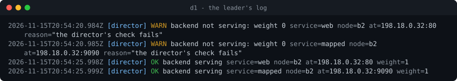

Reference
When things fail
What theLB does when a director, a backend, an application or the network fails - and what you need to do, if anything.
Directors#
| What happens | What theLB does |
|---|---|
| The leader crashes (three or more directors) | The others elect a new leader within a few seconds. It takes each VIP once its lease runs out on the crashed machine (6 seconds by default) and nothing answers for it. New connections go on; open connections go on too, because connection sync told the new leader where each one goes. After 10 seconds, the crashed director is taken out of the vote. |
The leader is stopped (SIGTERM, Ctrl+C, closing its terminal) | It hands leadership to another director first - a short, clean failover - and leaves the vote. |
| Another director is stopped | It leaves the vote. The leader carries on, even when it is the only director left. |
| One of two directors crashes | The other waits out the lease (8 to 14 seconds without a leader, by default), checks that the crashed one is gone and the VIP is free, then stands alone with the cluster's full state. The crashed one must be approved again. The VIP is never on both machines. |
| Two directors cannot reach each other | Depends on what is between them - see Two directors. |
| The leader is cut off from the others | It gives every VIP up by itself, within about a second. The others elect a leader. |
| A director restarts | It removes what it left in the kernel, rejoins without approval, and follows. |
| Every director stops | The cluster's state is gone. The next director with --bootstrap creates a new cluster (a new certificate authority, the same secrets). Every node must be approved again, and pools, services and assignments must be created again - from your saved commands. The backends lose nothing: each one joins again by itself and offers what it offered before. Kubernetes Services keep their VIPs: once the pools are back, each takes again the address its status names. |
| theLB crashes, but the machine stays up | Its VIPs keep answering, and its kernel keeps forwarding, until the lease runs out (6 seconds). The new leader takes each VIP only then. The old IPVS rules stay until theLB starts again and removes them - harmless, because no VIP brings traffic to them. |
| theLB hangs | Under systemd, the watchdog restarts it within 30 seconds. A hung leader stops renewing its lease, so the VIPs move. |

As text
2026-11-15T20:54:33.150Z [raft] WARN rejecting pre-vote request since we have a leader from=198.18.0.13:7443 leader=198.18.0.11:7443 leader-id=d1-eb0e9509
2026-11-15T20:54:33.870Z [raft] WARN heartbeat timeout reached, starting election last-leader-addr=198.18.0.11:7443 last-leader-id=d1-eb0e9509
2026-11-15T20:54:33.894Z [director] WARN another machine answers for the control VIP: this leader waits vip=198.18.0.10 reason="82:89:43:24:7b:db still answers for it: this leader takes it once it is no more - within the 6s lease, if a theLB that stopped left it"
2026-11-15T20:54:33.898Z [director] WARN another machine answers for a service VIP: this leader waits vip=198.18.0.22 reason="82:89:43:24:7b:db still answers for it: this leader takes it once it is no more - within the 6s lease, if a theLB that stopped left it"
2026-11-15T20:54:33.898Z [director] WARN another machine answers for a service VIP: this leader waits vip=198.18.0.21 reason="82:89:43:24:7b:db still answers for it: this leader takes it once it is no more - within the 6s lease, if a theLB that stopped left it"
2026-11-15T20:54:33.898Z [director] WARN another machine answers for a service VIP: this leader waits vip=198.18.0.20 reason="82:89:43:24:7b:db still answers for it: this leader takes it once it is no more - within the 6s lease, if a theLB that stopped left it"
2026-11-15T20:54:40.125Z [director] OK the control VIP is no more: taking it vip=198.18.0.10
2026-11-15T20:54:40.126Z [director] OK leader node=d2 term=3 member=d2-7517a90e
2026-11-15T20:54:40.126Z [director] OK control VIP taken vip=198.18.0.10 port=7443 interface=eth0
2026-11-15T20:54:44.127Z [director] WARN director gone: out of the vote, so the others keep their majority; it rejoins without approval when it starts again node=d1 member=d1-eb0e9509 voters=2 reason="d1's control port refuses connections: its theLB is not running"Backends and applications#
| What happens | What theLB does |
|---|---|
| An application fails | Weight 0 after 3 failed checks (about 6 seconds); back after 2 good ones. It stays assigned. If no backend of a VIP serves, the leader gives the VIP up until one does. |
| A backend dies | Weight 0 when its 10-second heartbeat lease runs out, or sooner if the directors' check fails first. |
| A backend restarts | It rejoins without approval and takes back its offers. Its assignments stay. |
| A backend is stopped | It asks to be drained, keeps its VIPs a moment so that connections on their way are not lost, then removes everything. |

As text
2026-11-15T20:54:20.984Z [director] WARN backend not serving: weight 0 service=web node=b2 at=198.18.0.32:80 reason="the director's check fails"
2026-11-15T20:54:20.985Z [director] WARN backend not serving: weight 0 service=mapped node=b2 at=198.18.0.32:9090 reason="the director's check fails"
2026-11-15T20:54:25.998Z [director] OK backend serving service=web node=b2 at=198.18.0.32:80 weight=1
2026-11-15T20:54:25.999Z [director] OK backend serving service=mapped node=b2 at=198.18.0.32:9090 weight=1Someone changes theLB's setup#
| What happens | What theLB does |
|---|---|
Someone runs ipvsadm -C, deletes a VIP with ip address del, deletes the nftables table, or changes a kernel setting theLB set | Puts it back within 10 seconds, and logs WARN drift repaired: .... |
| Someone adds a backend to one of theLB's IPVS services by hand | Removes it. |

As text
2026-11-15T20:54:30.009Z [dataplane] WARN drift repaired: an IPVS service was removed; added again service=tcp/198.18.0.22:80 scheduler=wrr
2026-11-15T20:54:30.009Z [dataplane] WARN drift repaired: an IPVS service was removed; added again service=tcp/198.18.0.21:80 scheduler=wrr
2026-11-15T20:54:30.010Z [dataplane] WARN drift repaired: an IPVS service was removed; added again service=tcp/198.18.0.20:80 scheduler=wrr